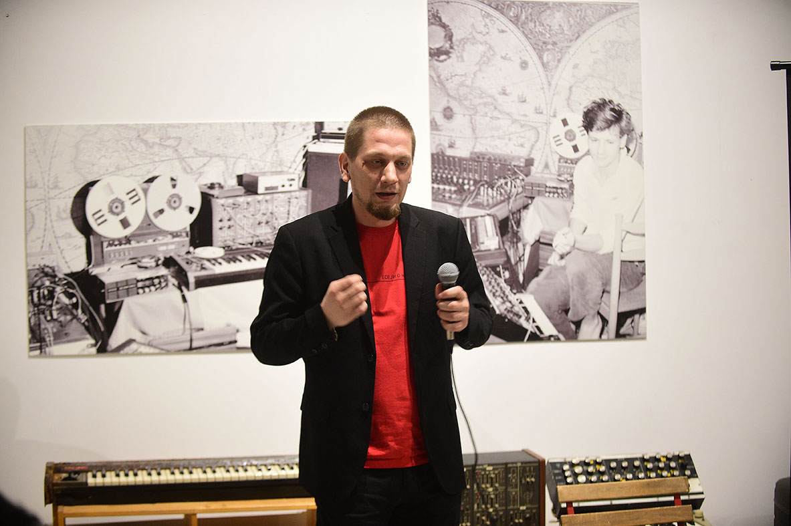
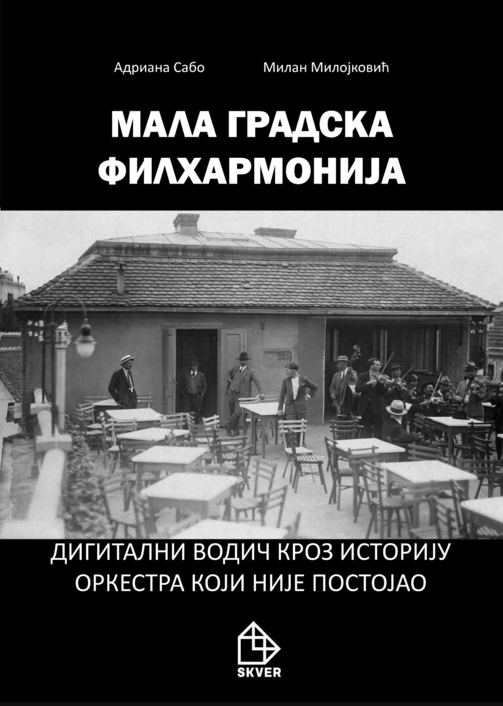
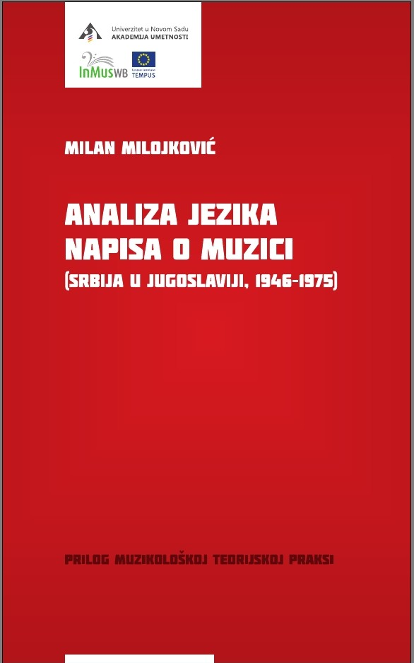
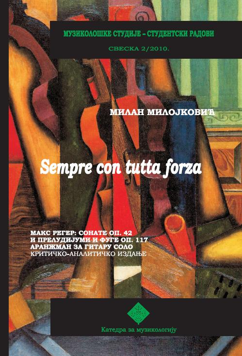

photo: D. Milenković
About
Milan Milojković (Zaječar, 1986) completed his Bachelor’s, Master’s, and Doctoral studies in Musicology at the Faculty of Music in Belgrade. He defended his dissertation, which focused on digital technology in Serbian art music, under the mentorship of Dr. Vesna Mikić. Since 2009, he has been a regular contributor to the Third Program of Radio Belgrade. From 2012 to 2025, he served as a professor at the Academy of Arts in Novi Sad and as a guest lecturer at both the Faculty of Music in Belgrade and the Academy of Arts in Banja Luka.
He has published several books, including Analysis of the Language of Writings on Music (Academy of Arts, 2012) and Digital Technology in Serbian Art Music (Matica Srpska, 2020). He is the co-author of the publications A Guide to Punk Culture in Novi Sad (Academy of Arts, 2023), Soundscapes of Novi Sad (Academy of Arts, 2024), Small Town Philharmonic (Skver, 2025), among others.
He was a guest editor for an issue of the Sarajevo-based journal Insam (2019), and co-edited a conference proceedings volume dedicated to Ernő Király (2019) as well as a special issue of the journal Slovenika dedicated to Mihovil Logar (2022). He has published dozens of papers in domestic and international journals. He is actively involved in performing electroacoustic music and building electronic musical instruments, and is a co-founder and member of the Laptop Ensemble Novi Sad. Also, he is one of the editors and author at Radio Belgrade, Third programme (2009-).
Researching electroacoustic music and music technology is practically impossible without involvement in digital humanities and it is also interdisciplinary connecting engineering, computer sciences, humanities and arts, so he dedicated one chapter in his book “Digital Technology in Serbian Artistic Music” to the development of computational musicology and also got deeply involved in computer sciences, especially the history of music computing, development of sound sampling, sample banks and sample-based synthesis, automated musical analysis and most recently, AI tools for sound analysis and contextualisation. He's been teaching some practices of this field to the PhD students in Novi Sad, such as corpus analysis history, music information retrieval, data annotation, and AI based tools for sound-based research in humanities. He also participated in open science projects at University of Novi Sad as editor and reviewer. While working on the book „Soundscapes of Novi Sad“ during last year, he developed a database of annotated sound samples of the city’s acoustic environment (used in the book to accompany the map for soundwalks), and came across the challenge of researching sources relevant to the field, that pertain to the period before the existence of sound recordings (before 1900s in case of Serbia). Finding and organizing this material, as well as writing the book, required establishing a broad, interdisciplinary methodology, encompassing musicology, ethnomusicology, acoustics, journalism, sociology, cultural studies, sound technology, ethnology and computer sciences.
Native language(s): Serbian
Other Languages: English, C1
Computer skills: High-school trained computer technician
Editorial skills: OpenScience paper editing, digitizing and preparation, editing publications in InDesign, print preparation
Programming: Python, C, Bash, PureData, Max/MSP, CSound, assembly for ATMega328, 6502, 8085/8080
Electronics: Designing and assembling electronic devices (for art purposes – installations, sound synthesizers, interfaces, gadgets)
Guitar and electronic instruments playing: Performing in different classical and jazz ensembles
Writings
- Google scholar profile
- ORCID profile:
- Articles in peer-reviewed journals:
- Peer-reviewed conferences:
1. Sound Microcosm of Futurist Fantasia – Resound by Sonja Mutić, Musical Wave no 53, 2024, 24-30, ISSN 0354–9313, DOI: 10.46793/MT53.24M
2. Opera Third Bullet by Vojislav Vučković, or How would ChatGPT do on the Musicology Exam?, INSAM Journal of Contemporary Music, Art and Technology, 2023, 53-70, DOI: 10.51191/issn.2637-1898.2023.6.10.53
3. The Role of Music on the Yugoslav Computer Demoscene, New Sound no. 60, Beograd, FMU, 2022, 25-42. ISSN 1821-3782, DOI 10.5937/newso2260025M
4. Presence of Computers on Yugoslav popular music scene in the second half of the 80s, Musicology no. 33, Belgrade, Musicological Institute SASA, 2022, 173-191. ISSN 1450-9814, https://doi.org/10.2298/MUZ2233173M
5. Through Coloured Wave Fields – Technologic and compositional achievements in composition „From Within“ by Marko Nikodijević and Robert Henke, Musical wave no. 51, Belgrade, Clio, 2022, 20-28. ISSN 0354-9313
6. Music and Media Studies at the Academy of Arts in Novi Sad – the journey towards interdisciplinary master study program, Journal for Musical Culture Music 1/2021, Sarajevo, Music Academy University of Sarajevo, 2021, 74-92. ISSN 1512-5297
7. Live Electronics in works by Serbian Authors from the 90s, Musical Wave no. 50, Belgrade, Clio, 2021, 2-17. ISSN 0354-9313
8. Cooperation of Katalin Ladik with Serbian Composers of Electroacoustic Music, Matica srpska review of stage art and music no. 60, 2019, 123-138. ISSN 0352-9738
9. Electroacoustic Music in Vojvodina – from experiment to Academic subject (1960-2000), Matica srpska review of stage art and music no. 57, Novi Sad, Matica srpska, 2018, 147-162, ISSN 0352-9738, also in Synaxa – Matica srpska International Journal for Social sciences, Arts and Culture no. 2-3, 2018, 143-156, ISSN 2619-9998
10. Pilgrimage Through a Sound Horizon - a Guide Through the Electroacoustic Works by Vladimir Jovanović (1956-2016), New Sound 49, 2017, 81-96, ISSN 1821-3782
11. Songs Published in Magazine Metronom za Vas (Metronom for You) and on Records Released by Yugoslav Labels, Thema Vol 4, No 1-2 Vienna, Holizer, 2015. ISSN 2307-440X
12. „A Peasant's Interview with a Foreign Journalist“ by Predrag Milošević in Relation to the Question of Socialist Realism in the History of Serbian Music, Musicology no 21, Belgrade, Institute of musicology SASA, 71-83, ISSN 1450-9814, doi 10.2298/MUZ1621071M
13. Aesthetical Views of Vojislav Vučković in the Light of Theory of Reflection and Critical Theory, New Sound 41, 2013, 27 -41, ISSN 1821-3782
14. On the Guarding of the Heart by Đuro Živković: Another View on the Symbiosis of Religion, State and Music, New Sound 39, 2012, 81-90, ISSN 1821-3782
15. Rebuses by Srđan Hofman in the light of incorporation of computer as compositional tool in the late 80s, Mirrors – Musical world of Srđan Hofman, Beograd, FMU, 2024, 191-218, ISBN 978-86-81340-71-4
16. Berislav Popović and Music in Zaječar after WWII, Diffractions of Berislav Popović’s Compositional, Music-theoretical, Pedagogical, Social and Cultural Creation, Belgrade, FMU, 2022, 367-376. ISBN 978-86-81340-54-7
17. Not Just Beeps and Blops - Music for Early Home Computers (1974-1979), Shaping the Present through the Future: Musicology, Ethnomusicology and Contemporaneity, Belgrade, Institute for Musicology SASA, 2021, 223-234. ISBN 978-86-80639-56-7
18. Electroacoustic Works by Ernő Király - Composer's Relationship with Music Technology and an Overview of Compositional Strategies, Ernő Király - Life in Music, Novi Sad, Academy of Arts, 2021, 119-132. ISBN 978-86-81666-18-0
19. Improvisation, Aleatorics and Extended Techniques in Rudolf Brucci's compositions "Imaginations" and "Birds", The Life and Work of Rudolf Brucci - Composer in the Rift between Aesthetics and Ideologies, Cambridge, Cambridge Scholars Publishing, 2021, 116-132. ISBN 978-1-5275-7313-0
20. Electroacoustic Music in SFRY in the Period of Country’s Dissolution – the Case of Association of Electronic Media Artists, Yugoslav Idea on/in Music, Beograd, Serbian Musicological Society, 2020, 215-227. ISBN 978-86-7946-306-7
21. Future of the recent past - Few Case Studies on Contemporary Electroacoustic Music in Struggle with Technological and Aesthetic Challenges, Transitions/continuities, Katedra za Muzikologiju FMU, 2016, 44-54, ISBN 978-86-88619-73-8
22. “Slovenia Ahead, the Rest Halt“ – Writing Practices About Contemporary Music in “Musical Newspapers” (Zagreb 1946-1948), Institutions, Politics and Music in Serbia and Slovenia 1945-1963, Univerza v Ljubljani, Filozofska fakulteta, 2015, 165-177, ISBN 978-961-237-790-8
23. Treatment and Meaning of Synthi 100 – the Cases of Simo Lazarov (Bulgaria) and Paul Pignon (Yugoslavia), Пети Академични пролетни четения: ХХ век - време на конфронтации, време на открития, София, Kатедра „История на музиката и етномузикология“ в Националната музикална академия „Проф. Панчо Владигеров”, 2015, 128-137, ISSN 1314-9261
24. The Pleasure of Sound, Identities on Paper and Screen, Beograd, Katedra za Muzikologiju FMU, 2014, 123-132, ISBN 978-86-88619-47-9
15. Interdisciplinary Approach to the Research of the History of Gramophone Records – the Cases of PGP-RTB and Balkanton, Академични пролетни четения: посветени на Бьлгарския музикален авангард, София, Kатедра „История на музиката и етномузикология“ в Националната музикална академия „Проф. Панчо Владигеров“, 2014, 227-246, ISSN 1314-9261
26. One possible look on biography and works by Stevan Stojanović Mokranjac from the standpoint of post-digital theories, Mokranjac no 16, Negotin, Dom kulture „Stevan Mokranjac“, 2014, 48 -57 (co-author Adriana Sabo) ISSN 1452-2691
27. Viennese heritage in Serbian music and art - Kornelije Stanković on the paintings by Stevan Todorović, Copy and paste - meins, deins, unsers im gespräch, Vienna, Shaker Verlag, Aachen, 2011, 59 -72, ISBN 978-3-8440-0048-1
1. Berislav Popović and Music in Zaječar after WWII, Diffractions of Berislav Popović’s Compositional, Music-theoretical, Pedagogical, Social and Cultural Creation, FMU, Belgrade, 30.11-2.12. 2021.
2. Not Јust Blips and Blops - Music and Musicology in Home/Personal Computing Revolution (1974-1978), Young Musicology 2020: Shaping the Present by the Future: Ethno/Musicology and Contemporaneity, Muzikološki institut, Beograd, September 24-26. 9. 2020.
3. Electronic studio of Radio Belgrade at the Crossroads of Analog and Digital Epoch, conference within the European project Unearthing the Music: Electronic Studio - A Place of Experiment, Artistic Utopia, or Revolution? Modernist Tradition and New Perspectives, Radio Belgrade, Belgrade, 4. 12. 2019.
4. Electroacoustic works by Erno Kiraly – relationship with music technology and review of production strategies, Erno Kiraly – Life in Music, interdisciplinary conference with international participants, Academy of Arts, Novi Sad, 27-28. 9. 2019.
5. Electroacoustic Music in SFRY in the period of country’s dissolution – the Case of Association of Electronic Media Artists, Yugoslav Idea on/in Music, International conference, Matica srpska, Novi Sad, 25-26. 5. 2019.
6. Socialistic Aesthetism and Serbian Symphonic Output (1951-1961), International Conference Culture of Tito´s Yugoslavia 1945-1980, Vienna, Austria, 18 -20. 10. 2013.
7. Musicology and Media – Media of Musicology, Interdisciplinary Symposium of Media - Art and Media, Opatiјa, Croatia, 19 - 22. 9. 2012.
Lectures
Parallel Worlds – Yugoslav Computer Music at the time of country's dissolution
The title of the lecture, borrowed from the eponymous installation by Gordana Novaković and Marjan Šijanec, is utilized to illustrate simultaneous, partially intertwined developments in the field of computer music creation and performance during the late 1980s in Yugoslavia. To illustrate the scope, activities, and achievements in this domain, the lecture will focus on the first Yugoslav computer music festival, *Mala lična muzika* (Little Personal Music), held in Belgrade in June 1987; the "case" of the exhibition by the "last Yugoslav association," the Association of Electronic Media Artists, in May 1991; and the state of the Yugoslav demoscene during this period. Using these examples, the lecture will demonstrate the methods of computer utilization in the music of that era, the state of digital technology at the time, and the relationships between creators, their immediate artistic environment, and the broader political situation both domestically and globally. Finally, it will address the significance of this musical genre for the subsequent development of electroacoustic creation in the post-Yugoslav states.
"Budi čovek kao Đorđe"- veče posvećeno Đorđu Marjanoviću (with Igor Dević)
Ove večeri su inicirane proučavanjem nasleđa našeg umetnika, pre svega tonskih zapisa sa njegovih koncerata u zemlji i inostranstvu, arhiva klubova Đokista (fanova Đorđa Marjanovića), kao i privatnih zvučnih i vizuelnih zapisa koje naši članovi nastoje da sagledaju u kontekstu u kojem su nastajali sa ciljem da se istakne značaj ovog umetnika za istoriju srpske kulture i njenog doprinosa globalnim muzičkim kretanjima. Naši članovi su uočili da je dosadašnja predstava o Đorđu Marjanoviću u domaćoj javnosti uglavnom zasnovana na diskografiji i pojedinim velikim mitovima iz istorije popularne muzike, te da ne reflektuje celokupnost njegovog nasleđa i ličnosti. Stoga nam je cilj da ovim projektom doprinesemo upotpunjenju načina na koje Đorđe Marjanović postoji u našem kolektivnom sećanju, ali i da profilišemo novi pogled na njegovu umetnost pokazujući šta "Čovek" znači za našu generaciju i današnje stanje u srpskoj muzičkoj kulturi. Događaj je započeo uvodnim predstavljanjem javno poznatih zapisa sa koncerata Đorđa Marjanovića, za kojim je bilo reči o našim aktivnostima na digitalizaciji i očuvanju zaostavštine ovog autora, naročito onog njenog dela koji do sada nije bio poznat javnosti. Publika je imala priliku da prvi put čuje do sada neobjavljene snimke sa brojnih koncerata iz SSSR-a, uz kuriozitete i demo snimke. Tokom večeri, predstavljene su i fotografije iz privatne arhive Đorđa Marjanovića, kao i deo bogate dokumentacije "Đokista". Drugi deo večeri je bio posvećen razgovoru sa učesnicima, o značaju Đorđa Marjanovića sa savremene stvaraoce kao i ljubitelje popularne muzike, o zaključcima i poukama koji se mogu izvesti iz bavljenja njegovom zaostavštinom.
Thanx mr Rorschach - tačka preseka umetničkih stranputica
Lecture about Mitar Subotić Suba, "Rex Ilusivii", his compositions, poetics and artistic ideology.
Not Just Blips and Blops – Music and Musicology in Home/Personal Computing Revolution (1974–1988)
Throughout its early days in the 1960s, computer music was primarily connected with academic institutions, since the hardware needed for composing and performing was not available for home use. Overviews of the field’s past usually avoid addressing the microcomputing revolution of the late 1970s and early 1980s, primarily due to the amateur/hobbyist ‘nature’ of this field, and because home computers were not able to perform complex processes developed on universities’ mainframes. Thanks to the growth of music- related internet resources and contemporary data-handling skills, this ‘forgotten’ field of home computing ‘re-appeared’, this time as a possible historical narrative about self-education and discovering a new and existing digital world through ‘blips and blops’. The main resources for this paper were programming manuals, magazines and similar publications (periodic or not) from USA and Europe, that offered numerous examples of music treatment in microcomputing. The research results prove that music was one of the most popular applications for these early machines, and there are numerous examples of using musical knowledge as a tool for achieving the most demanding computing tasks. The results also make it obvious that programmers needed both practical and theoretical musical skills to translate ideas into the program lines. Thus, the main goal of this paper is to make an effort towards a construction of a historical narrative about the relationship between music and personal computer development, that eventually made computers ‘devices for the masses’, unavoidable in almost every field of contemporary musical practice.
Musicology and Media - Medium of Musicology
Međunarodni interdisciplinarni simpozij FILOZOFIJA MEDIJA (2012.) Umjetnost i mediji
Books
-
Adriana Sabo, Milan Milojković - Mala gradska filharmonija (Skver, Zaječar, 2025)

Mala gradska filharmonija (pdf)
Milan Milojković, Ira Prodanov, Ljubica Ilić - Zvučni pejzaži Novog Sada (Akademija umetnosti Novi Sad, 2024)
Milan Milojković, Adriana Sabo, Ira Prodanov, Ljubica Ilić - Vodič kroz pank kulturu u Novom Sadu (Akademija umetnosti Novi Sad, 2023)
Milan Milojković - Digitalna tehnologija u srpskoj umetničkoj muzici (Matica srpska, Novi Sad, 2020)

Sajt izdavača
Milan Milojković - Analiza jezika napisa o muzici (Srbija u Jugoslaviji 1946-1975, prilog muzikološkoj teorijskoj praksi) (Matica srpska, Novi Sad, 2013)

Milan Milojković - Sempre con tutta forza - Maks Reger: Sonate Op.42 i preludijumi i fuge op. 117 aranzman za gitaru solo. (FMU, Beograd, 2010)

Music
Compositions and performances, solo or as a member of bands Laptop Ensemble Novi Sad , Hойзац and ExYou .
Milan Milojković - Suite “Turbulences”. Electroacoustic work, fixed media, 2026.
The suite “Turbulences” is a four-movement sonic autobiographical record created as a reaction to nightmares presumed to be triggered by major life changes. The fundamental sounds were created using hand-built analog synthesizers and subsequently processed; from there, micro and macro structures were realized using standard electronic music studio techniques. Recorded in Zaječar and Ljubljana from February to April 2026.
Milan Milojković - Skrb za varnost in zdravje na delovnem mestu
Milan Milojković - Majka nad majkama
Milan Milojković - Fanfare za jutarnju rutinu jednog robota
Milan Milojković i Ivan Čkonjević
Recorded live in optic shop (where Ivan works), July 15, 2020. Ivan Čkonjević - sound objects and electronics, Milan Milojković - ZvuGen (DIY programmabile sound generator), Igor Čubrilović - mastering.
Nije lako lagati, 2020.
Recorded live in Novi Sad, 7.3.2019. on Improstor #107. Ivan Čkonjević - sound objects and electronics, Milan Milojković - ZvuGen (DIY programmabile sound generator), Igor Čubrilović - mastering.
Studies for small sound generators are results of the research conducted in the field of sound production devices from the past and their contemporary usage. I started the process in 2015, finding the first of the chips, YM2413 in a toy keyboard from (mid?) 80s. With chip extracted from original PCB and re-soldered onto a test board with Arduino, I followed the datasheet and wrote the code that will enable sending data to chip via serial (usb). In order to exploit all the features of the sound generator, I used RTC (real-time composition) library for PureData by Karlheinz Essl, made in Ircam during the 90s, for generating data structures for all available sound parameters of approximately equal complexity. Since this setup proved very versatile and applicable in numerous musical situations, I decided to continue the search for the chips in old computers, game consoles and other sound producing devices and use them in a similar manner.
Due to technical limitations, some adaptations were needed from case to case. The exact same procedure like with YM2413, I exploited with YM2203 and Atari Pokey. Commodore SID chip turned out to be very prone to damage, and at the same time expensive and hard to find, so after two chips destroyed, I decided to modify my approach and use the chip in the original computer. It turned out it is possible to control SID in a similar manner over user port, so I opted for this approach for safety reasons. Similar procedure is used with Amiga Paula, but with the keyboard port hacked, since the software similar to the one I used for previous examples was already available. Korg Monotron seems like an “intruder” here, and it is, in terms of design and origin, but as it turned out, it is a very hackable little device that needed very few modifications in order to be used in aforementioned way.
After all experiments and try-and-fail attempts, I ended up with what can be considered small sound generators benchmark that can demonstrate “true” hardware possibilities of the device under test, with somewhat acceptable aesthetic effect, in terms of music and/or sound art, although this was not the original intention. None of these devices were meant to be used like this. After all experiences, I decided to modify my approach a bit more, so this seemed like the right moment for publishing results achieved so far, because what is expected in the future will be considerably different and not suitable for same album. In a way, this can be considered as volume one.
Session occurred as part of the course "Analog synthesis" at the Faculty of Music in Belgrade, realized online due to COVID-19 quarantine measures. Students: Tamara Rajinac, Matija Anđelković, Atila Barna.
Recorded in Novi Sad, 20.7.2017. Ivan Čkonjević - sound objects and electronics, Milan Milojković - ZvuGen (DIY programmabile sound generator). photography by Dan Penschuck (feindesign.de) design by EMERGE
Hойзац - Intimnosti
Lost tapes from under construction studio all the material was created during the recording sessions in the studio in Kineska četvrt in Novi Sad in 2017!
Milan Milojković - Postoji samo jedna laž, postoji samo jedna istina
Lenhart Tapes Orchestra's first concert (MaTerra Mesto, Novi Sad, 15.02.2014). Players: Lenhart, Stanković, Milojković, Dražić, Đurović. Released March 5, 2014
Videos
Live at JazzClubMezzoforte
Jure Boršič & Milan Milojković - Live at Taktišče no. 45
The Mushroom Band - Ballads of a Cosmic Nomad (full album)
Kozarec in skodelica
Lenhart tapes - Dzamahirija (guitar Milan Milojković)
Lenhart tapes - Kurvin vodenjak (guitar Milan Milojković)
Ulični emprompti
Synthi 100 improvisation
Cvetovi, konj i cafe
Uživo u Temerinu, 25.9.2022, Lordan Skenderović, Ivan Čkonjević i Milan Milojković
Almaška, XLVII, Festival "Osmatranja", crkva Sv. Mihaela Arkanđela, Kraljevo
Lordan Skenderović, Ivan Čkonjević i Milan Milojković - Memla u borovoj šumi
Gabi Fischer & Milan Milojković - Impro no. 3
Gabi Fischer & Milan Milojković - Impro no. 2
Lordan Skenderović, Ivan Čkonjević i Milan Milojković - Heart of Noise
Ivan Čkonjević & Milan Milojković - Izvan kontrolera
Ivan Čkonjević & Milan Milojković - Lalajlalalalalaj
Ivan Čkonjević & Milan Milojković - Najavljeno odsustvo
Ivan Čkonjević & Milan Milojković - Rezon Alma
Zlatko Baracskai & Milan Milojković - Live at Academy of Arts, Novi Sad
Press & Play show 010 - gosti Milan Milojković & Filip Đurović
Нойзац - live at Grand cafe, Szeged, Hungary
Projects
Various DIY stuff, synthesizers, computers, software, etc.
- COLD PEACE, 2026 - Milan Milojković and Danilo Šainović
- Tanz mit Synthi 100 - study in real-time semi-automated control of analog synthesizer
- 6502 javascript emulator
- Serbian Newspaper OCR. Optimized for Serbian Cyrillic newspapers with column-based layout reconstruction
- ByteBeatenstein. Simple FPS maze game with bytebeat music generator
- SEMA & SAVO - Statistic Electroacoustic Music Analyzer and Sound Analysis Video Output
- PoToMMA - Post-Tonal Music Midi (File) Analyzer
- SN76477 ("Space Invaders") programmable sound generator in a form of a selfstand synthesizer.
- Korg Monotron CV hack with arduino as sequencer and filter LFO, on 3 pins filtered PWM for control voltage, and one digital pin as gate.
- Dual AS3394 analog synth voice with 2 'Moritz Klein style' envelope generators and 6 DACs for CVs, driven with puredata patch. Pitch, cutoff and PWM are controlled with sequencer.
- Discrete DSP Experiment
- 6502 homebrew computer
Past exhibition: Parameter Generative Arts Fair 2026 in Ljubljana, Slovenia.
(Click on image for full size)

Catalog with screenshots:
Short video:
Short description:
Cold Peace is a generative web art installation that autonomously produces continuous, unique
audiovisual output. It explores the realities of war through glitch visuals and texts drawn from
online data, challenging conventional passive perceptions. The audio consists of a live stream
of coded or voice messages transmitted via shortwave frequencies, offering viewers a glimpse
into the hidden communication of global powers. The title offers a satirical comment on the
notion that we live in times of peace.
In-depth description:
"Cold Peace" is a generative web art installation that at its core has an automatic algorithm
producing audio-visual output. It will automatically generate its output without any user input,
from start (run) until it is turned off. It runs on any modern computer with a screen and speakers.
On a thematic level it is socially engaged art with an anti-war message. It presents the viewer
with the atrocities, absurdity, ideological background and realness of present and past of the war
by exposing facts and lies available online about specific and general armed conflicts.
One of the goals of "Cold Peace" is to disrupt the viewer's "lulled state" in the idea that war is:
(1) something happening somewhere else and to someone else; (2) something that we don't
have any control over. In fact, war is happening on our planet, to us as humans, with our money
and waged by our ruling class.
The video is generated to show: (1) glitching and distorted images and quotes related to the
various conflicts - communicating the message on an emotional/aesthetic level; (2) it also
generates readable texts (prose) that engages viewers on an intellectual level. Those texts
explain the conflict from the perspectives from all sides involved. The second part should inspire
the viewers to question the one-sided narrative alignment that is often demanded from us, and
hopefully see "the bigger picture" of war.
The installation operates on a client-server model that bridges live web data with a high-speed
generative visual engine. Backend (Python/Flask) acts as the "Intelligence Layer." It utilizes a
custom module to scrape and process global news and geopolitical perspectives from RSS
feeds. Frontend (JavaScript/p5.js/Leaflet) generates a visualization layer. It handles data
ingestion, spatial mapping, and the rendering of the generative aesthetic. The core logic of the
artwork is driven by a recursive function.
The system starts with a Wikipedia entry (e.g., "List of ongoing armed conflicts") and parses the
HTML to extract links, images, and casualty statistics. Using a set of "war keywords" (e.g.,
invasion, insurgency, coup), the system selects a new topic from the current page's links,
creating an endless, autonomous journey through present and past human conflicts. The
frontend polls the Python backend for curated news headlines and targets that provide a more
granular, real-time perspective than the static Wikipedia archives. The visual style reflects the
"entropy" of the data being consumed. The installation calculates an archive.entropy value
based on the reported death toll of a conflict. As the toll increases colors shift from muted tones
to high-contrast reds and vibrants and the glitch frequency increases. Also, visual breaches
(horizontal pixel shifts) become more violent. Instead of displaying full images, the program
takes random segments of conflict photos, applies rotation, and blends them using various
modes. Paragraphs from news sources are shattered into fragments and rendered as bold,
overlapping graphic elements on the canvas. The background is powered by Leaflet.js,
transformed via CSS filters into a high-contrast, inverted "tactical map." When a new conflict
node is reached, the system fetches coordinates via the Wikipedia API and "flies" the “camera”
to that location. Code then draws "tactical lines" (polylines) between the central conflict node
and related geopolitical actors identified in the text, visualizing the web of influence.
The audio part consists of streaming coded or voice messages aired on short-wave frequencies
from all around the world. By witnessing in real time the cryptic and literal communications
within the world of power, viewers can feel the immediateness of what we call "the perpetual
and hidden world war". The title "Cold Peace" is a satirical comment on the notion that we live in
times of peace.
All eight channels used (six voices and two reverbs) Movement tracking data collected with laptop webcam, automatically quantized, sequenced and converted to CC messages in (almost) realtime and sent to four DACs and two switches, patched to changeable synth parameters. Recorded live in Radio Belgrade Electronic studio, 9. 6. 2023. Video recording: Adriana Sabo
This is the story. More then decade ago user miker00lz posted 6502 cpu emulator for arduino. It meant a lot for me, I learned so much from that code, used it to make vic20 for arduino Due, learned how to write my own emulators for other chips etc. When chatGPT appeared I thought let's see if it can translate that code to python and it failed completely. Most of the problems were connected to the "computer" nature of the task: using bytes instead of integers and floats, updating flags register, branching, counting cycles... Since I already started, I asked a friend to help me finish, and that's how I learned a bit of python that served me well for years. Few days ago I saw Elon Musk claiming that AI in recent future will be converting prompts directly to assembly, what reminded me of my troubles and I decided to try again, this time with Gemini and Javascript. Needless to say, result was same as before - although chatbot was much more chatty about features of the cpu and behaved very knowledgeable - problems with code it made were same. It also gave wrong clues about errors. So again, I did it by hand, learned a lot and that's it. Try it, you can type or copy-paste basic code from famous "101 basic computer games" book by David Ahl (photo: "Sinewave", pp. 146, 1978 ed.) . EhBasic ROM I used needs just a few tweaks to run them. So, AI was in this case kinda useful, I guess...
SEMA extracts data from audio file into csv file. Focuses on understanding the piece's formal structure and timbral evolution using Gemini. Connects quantitative data to qualitative musical observations and concepts. Defines the features and provide their meaning in an electroacoustic context:
RMS Energy: Overall loudness/intensity.
Spectral Centroid: Perceived brightness (higher value = brighter).
Zero-Crossing Rate (ZCR): Degree of noisiness vs. tonality (higher value = noisier/more percussive, lower = more tonal/sustained).
Novelty Curve: Rate of significant sonic changes/onsets (peaks indicate 'newness' or activity).
MFCCs: Mel-Frequency Cepstral Coefficients, a compact representation of timbral color/texture.
SAVO (Sound Analysis Video Output) is a powerful, Python-based tool that automates the process of analyzing an audio file and generating a comprehensive suite of outputs: a detailed textual report, static feature plots, a CSV of all feature data, and a dynamic video visualization.
The core of SAVO is its ability to combine traditional musicological analysis with AI-generated commentary. Using the librosa library, the program extracts key audio features such as RMS energy, spectral centroid, zero-crossing rate, and MFCCs. This data is then sent to the Gemini API, which acts as a music analyst to produce a high-level narrative and time-stamped commentary.
Article in SoundingFuture web magazine:
Examples of analysis:
Analysis of Klangfiguren - Gottfried Michael Koenig
Analysis of Composition No 5 - Karel Goeyvaerts
Analysis of Studie No 2 - Karlheinz Stockhausen
Post-Tonal Music Midi (File) Analyzer
Python script for analyzing MIDI files to determine their musical characteristics, with a special focus on identifying atonal tendencies and detecting twelve-tone rows. The script uses the music21 library for musicological analysis and mido for MIDI file manipulation. It also integrates with the Gemini API to generate a comprehensive, human-readable musicological report based on the raw analysis data.
Features:
MIDI Analysis: Analyzes a given MIDI file for basic information such as the number of parts, total duration, note/chord counts, and key/time signatures.
Atonal Tendency Detection: Provides quantitative data on atonal characteristics, including:
Global key correlation score.
Evenness of pitch-class distribution.
Prevalence of dissonant melodic and harmonic intervals.
Automated Segmentation: Splits the MIDI file into logical segments based on the completion of twelve-tone aggregates (i.e., when all 12 pitch classes have appeared).
Twelve-Tone Row Analysis: For each segment, the script attempts to identify a "prime row" and then searches for occurrences of its 48 standard forms (Prime, Inversion, Retrograde, Retrograde-Inversion) within the music.
Piano Reduction: Automatically generates a piano reduction of multi-part MIDI files to create a single-part score for a more focused analysis, if needed.
AI-Powered Report Generation: Uses the Gemini API to synthesize all the raw analysis data into a cohesive, academic-style musicological report. The report discusses form, tonality, compositional techniques, and the extent of serial application.
Building an audio delay processor using only generic components presents a significant challenge, but it offers a profound opportunity to understand the fundamental principles of digital signal processing (DSP) and digital logic. This project demonstrates a hardware-centric approach to a task typically handled by software, proving that complex audio manipulation can be achieved with discrete logic circuits.
6502 computer plays "Star Spangled Banner" from the article "A Sampling Techniques for Computer Performance of Music" by Hal Chamberlin, Byte no. 9, 1977 (with few wrong notes in the code).
Contact
For inquiries, collaborations, or academic exchange, please use the channels below:
- Email: milanmuz@gmail.com
- GitHub: https://github.com/milanmuz/